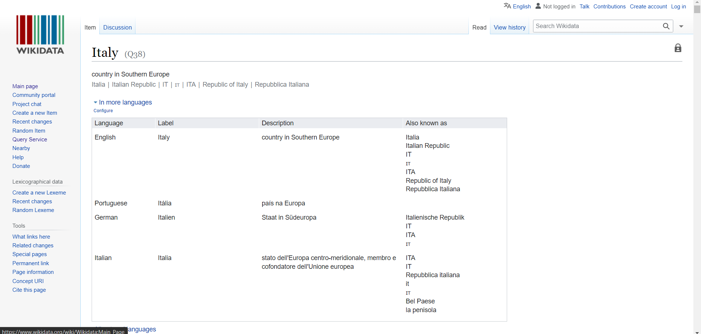

The first part of this project consists of the creation of a Melody story on the Melody website using knowledge graphs. First it was necessary the creation of a Melody account. Clicking on "start now" on the website it was possible to start the creation of our data story.
To start we had to choose the theme and the final theme was "Italian Rock Bands". We decided to show a little about their history, most popular bands and their members, period of creation of those bands, influences on them. All of it restricting the period of time from the 60s until current days. Our hypothesis was that those bands had a great influence on Italian culture and that it was influenced by American rock.
To prove our hypothesis, we used SPARQL queries to search the database. The database chosen was the WIKIDATA. In the WIKIDATA we searched for pre-established codes (for example: the Italy country code is Q38) and we added them to our search queries following the examples given by the professor on the site of WIKIDATA query.
Once the query was checked on WIKIDATA we added it on the Melody website with the template and color of our choosing. It could be a count, a line chart, a doughnut chat, a table, or any other kind of template the website provides. After our queries were correctly read, we moved the information up or down to create a storyline.
Throughout the work, several types of queries were used depending on the information required. We wanted to know about Italian bands, rock bands, monthly listeners, start dates of the bands, and other filters that would complement this story, so we needed to go through the same process explained before: check the code of what we were looking for on WIKIDATA, create a search query to give the data need, check the data, put it on the Melody website.
Counters were used to know the total number of Italian bands and the number of Italian rock bands. For graphics, melody asked us to give the result of two variables to build the bar chart and the doughnut chart could use more than two variables. We also used tables to show information such as bands created by year. For this we took the year of the creation date of the band and counted how many bands had the date in the same year. The table showed the year and how many Italian rock bands were created in each year. Another table was used to show examples of rock bands giving their names and pictures.